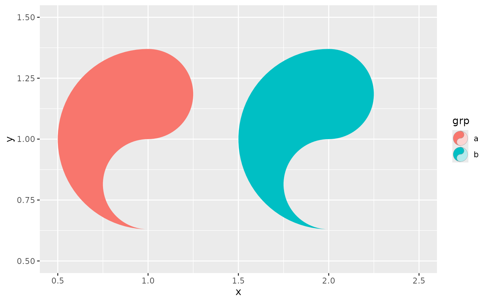
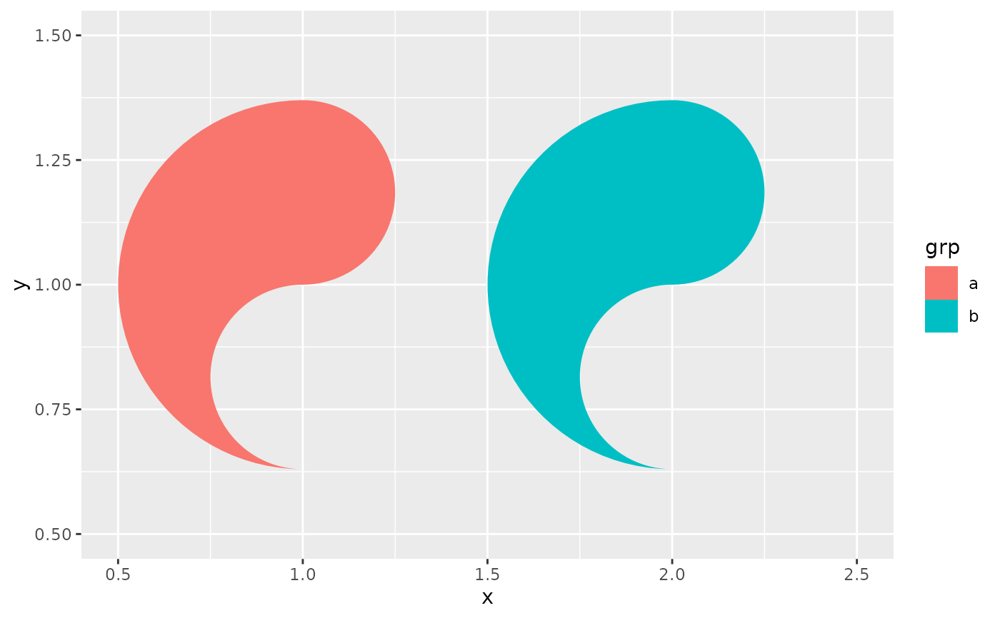

The legend key glyph used by geom_yin_fish() and geom_yang_fish(), and
therefore by geom_taichi(): a small taichi symbol whose relevant fish is
filled with the key's colour while the other is left as an outline, so the
key looks like the mark it describes and says which half of the glyph the
scale governs. Pass it to a layer's key_glyph argument to use it
elsewhere, or use key_glyph = "rect" for plain ggplot2 rectangles.
Arguments
- data
A one-row data frame of the key's aesthetics, supplied by ggplot2.
- params
The layer's parameters, supplied by ggplot2.
eyes = TRUEis honoured, so a plot drawn with eyes gets keys with eyes.- size
The key size in mm, supplied by ggplot2. Unused: the glyph is drawn in a square viewport that fills the key, so it stays round whatever the key's aspect ratio.
- fish
Which fish carries
data$fill:"yin","yang", or"both"— the last fills the yin fish with the key colour and the yang fish with a pale version of it, for a decorative complete symbol.
Details
Keys only appear for discrete fills. A continuous fill is drawn by
ggplot2::guide_colourbar(), which is a gradient bar rather than a set of
keys, so this glyph has no effect there.
Examples
library(ggplot2)
d <- data.frame(x = c(1, 2), y = 1,
grp = factor(c("a", "b")), value = c(1, 2))
# the default for the fish geoms
ggplot(d, aes(x, y)) +
geom_yin_fish(aes(fill = grp))
# a full symbol, or the old rectangles
ggplot(d, aes(x, y)) +
geom_yin_fish(aes(fill = grp), key_glyph = draw_key_taichi)

ggplot(d, aes(x, y)) +
geom_yin_fish(aes(fill = grp), key_glyph = "rect")
